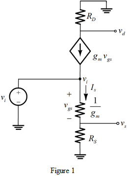

Step 1:
Refer to Figure P5.76 in the textbook for the NMOS amplifier.
It is observed that  is the voltage at the drain terminal and
is the voltage at the drain terminal and  is the voltage at the source terminal of the NMOS. Refer to Figure 5.40 (d) and 5.41 (a) for the T equivalent circuit model with output resistance,
is the voltage at the source terminal of the NMOS. Refer to Figure 5.40 (d) and 5.41 (a) for the T equivalent circuit model with output resistance,  .
.
Consider the expression for the output resistance.
Step 2:
Draw the NMOS equivalent circuit by replacing the transistor by its T-equivalent model.

Step 3:
Apply voltage divider rule (bottom).
Therefore, the expression for voltage gain, is .
Step 4:
From Figure 1, the input voltage (by Ohm’s law) is,
Apply Kirchhoff’s current law at node,
Divide the expression with 
Step 5:
Substitute the corresponding expressions.

Therefore, the expression for voltage gain, is .